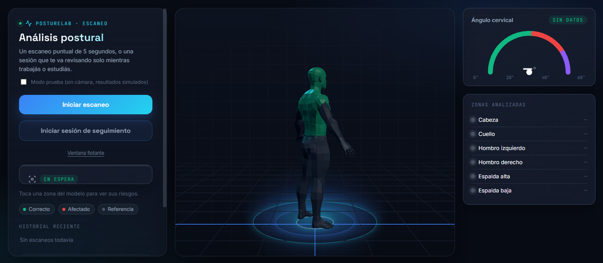
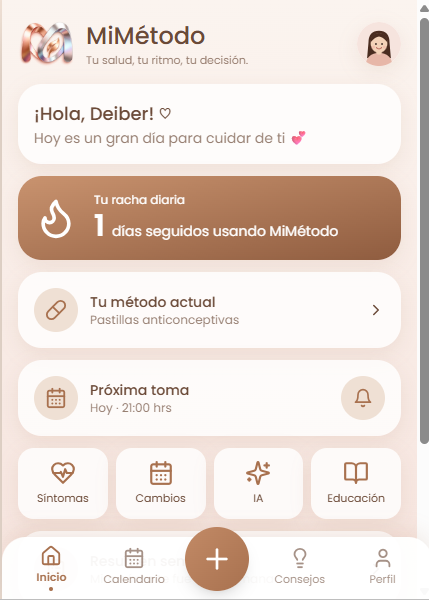
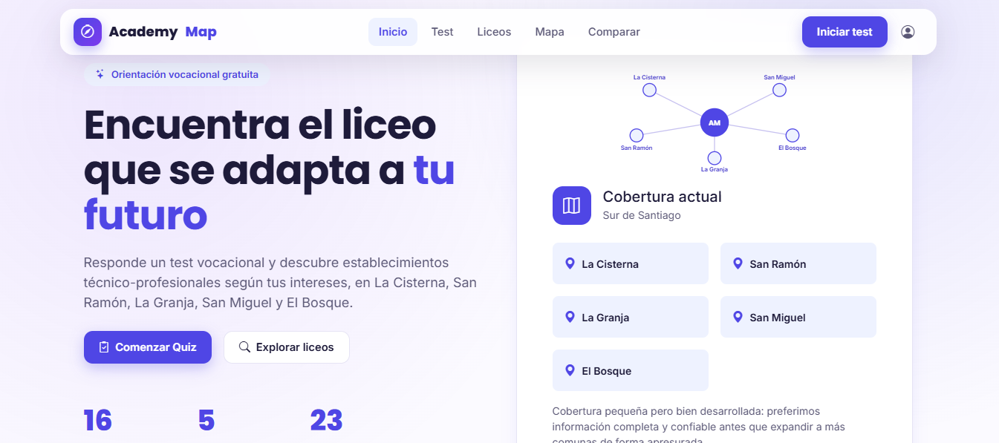

Frontend
Construcción de interfaces rápidas, accesibles y con personalidad.
Estudiante de programación · Santiago, Chile
Soy estudiante de Programación con formación Full Stack en Python. Me interesa desarrollar aplicaciones web útiles, desde la idea inicial hasta una versión funcional que otras personas puedan probar.
const developer = { name: 'Deiber Camilo', focus: [ 'producto', 'experiencias' ], status: true}; // haz que cuentelaunch(developer);01 / sobre mí
Me gusta desarrollar proyectos que tengan un propósito claro: ayudar a alguien, ordenar información o hacer más simple una tarea. Disfruto pasar de una idea a una primera versión funcional, probarla y mejorarla a partir de lo que voy aprendiendo.
Mi formación se centra en desarrollo web Full Stack, utilizando Python, Flask, HTML, CSS, JavaScript y MySQL. En mis proyectos he trabajado tanto la interfaz como la lógica y el manejo de datos, procurando que la solución sea útil y fácil de entender.
HablemosInterfaces que explican lo complejo sin hacerlo pesado.
Preguntas mejores antes de escribir soluciones.
Decisiones técnicas conectadas con objetivos reales.
02 / herramientas
Tecnologías que he utilizado en proyectos y actividades de formación.
Construcción de interfaces rápidas, accesibles y con personalidad.
APIs, lógica y datos que sostienen el producto.
Organización y gestión de datos con MySQL y SQL.
Control de versiones y herramientas para desarrollar proyectos con GitHub.
03 / mis proyectos
Estos son algunos de los proyectos en los que he trabajado mientras sigo aprendiendo y poniendo en práctica mis conocimientos. Las imágenes son mockups de presentación; cada enlace abre la versión publicada.

Proyecto enfocado en la conciencia postural durante el uso del computador. Combina una experiencia web con una propuesta visual para ayudar a reconocer hábitos que conviene mejorar.
Ver en línea : PostureLab (se abre en una pestaña nueva)
Sitio informativo pensado para encontrar y comprender mejor contenidos sobre métodos anticonceptivos, con una estructura clara y navegación sencilla.
Ver en línea : MiMetodo (se abre en una pestaña nueva)
Plataforma de orientación vocacional para estudiantes de 8° básico. Permite explorar liceos técnico-profesionales y comparar especialidades para tomar una decisión con más información.
Ver en línea : AcademyMap (se abre en una pestaña nueva)04 / cómo trabajo
Primero intento entender qué se necesita y a quién le puede servir.
Busco opciones, pruebo ideas y veo cuál tiene más sentido.
Empiezo a construir y voy revisando lo que funciona y lo que no.
Corrijo los errores y sigo mejorando con lo que voy aprendiendo.
05 / contacto
Me interesa conocer nuevas ideas, colaborar y seguir aprendiendo. Si quieres conversar sobre un proyecto o saber más de mi trabajo, puedes escribirme.